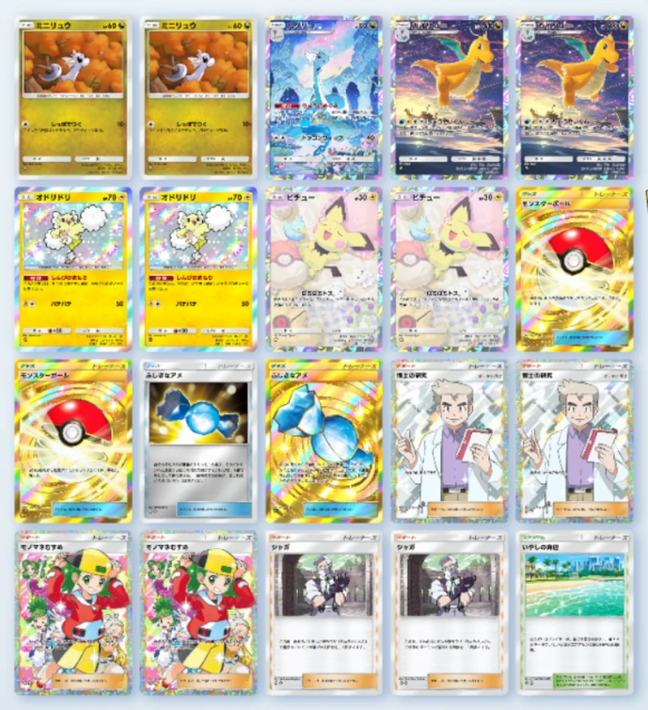

【ポケポケ】りゅうせいぐんカイリューデッキ｜シャガで4回→5回にする構築とオドリドリの使い方
結論：このデッキの主役は、じつはカイリューではなくオドリドリです。カイリューのワザ「りゅうせいぐん」は4エネとかなり重い。その4エネが溜まるまでの数ターンを、特性「しんぴのまもり」でポケモンexから一切ダメージを受けないオドリドリが肩代わりします。そして撃つときはシャガを添えて、選ばれる回数を4回→5回に。実戦5戦で4勝1敗、うち2戦は相手が降参しました。
「新パックでカイリューとシャガを引いた。りゅうせいぐんって強いの？ それともただの運ゲー？」——撃つ前に、まず4エネをどう払うかで詰まっている人。
2026年7月31日に、この構築でランクマッチを5戦回した実プレイの記録です。負けた1戦も含めて全試合そのまま動画に入れてあります。カード名・ワザ名・効果テキストはすべてゲーム画面と照合しました（カードの表記はゲーム内の正書どおり、ひらがなはひらがなのまま書いています）。
実戦5戦の結果（4勝1敗）
まず数字から出します。同じ日・同じ構築で5戦。勝った4戦のうち2戦は相手が降参という内容でした。
| 試合 | 相手 | 結果 | 内容 |
|---|---|---|---|
| 1戦目 | イエッサンex＋ホエルコ（無限耐久型） | 勝ち （相手が降参） | 毎ターン回復して耐える構えに対し、りゅうせいぐん1発で計画が壊れて降参された |
| 2戦目 | メガメタグロスex／ディアルガ | 勝ち | 相手がexしかいないのでオドリドリが完封。時間を稼いでカイリュー完成 |
| 3戦目 | メガサメハダー／パオジアン | 負け | メテノ（非ex）を出されてオドリドリの完封が崩れた |
| 4戦目 | 不明（相手が大事故） | 勝ち | 相手がたねポケモンを並べられず、何のデッキか最後までわからないまま終了 |
| 5戦目 | マギアナ／ミミズズ／ダンバル（鋼） | 勝ち （相手が降参） | 相手はドローソースを1枚も引けず。りゅうせいぐんがマギアナに2回当たって貫通 |
カイリューが立つのは早くても中盤です。それまで一方的に殴られないことが、このデッキの生命線でした。オドリドリが立っている間、相手のex主体デッキは本当に何もできません。逆に言うと、そこを崩されると一気にきつくなります（3戦目）。
デッキレシピ20枚
エネルギーは水＋雷の2種類です。

▲ 実際のデッキ画面（2026年7月31日時点）
| カテゴリ | カード | 枚数 | 役割 |
|---|---|---|---|
| ポケモン (9枚) | ミニリュウ | 2 | ハクリュー／カイリューのたね |
| ハクリュー | 1 | 特性「りゅうのめぐみ」でエネ加速。ベンチ要員 | |
| カイリュー | 2 | フィニッシャー。ワザ「りゅうせいぐん」 | |
| オドリドリ | 2 | 特性「しんぴのまもり」。実質の主役 | |
| ピチュー | 2 | ワザ「ばちばちトス」でベンチに雷エネを先付け | |
| トレーナーズ (サポート・グッズ10枚) | 博士の研究 | 2 | ドローソース計4枚 |
| モノマネむすめ | 2 | ||
| シャガ | 2 | りゅうせいぐんの回数を+1（4→5回） | |
| ふしぎなアメ | 2 | ミニリュウから一気にカイリューへ | |
| モンスターボール | 2 | たねポケモンサーチ | |
| スタジアム (1枚) | いやしの海辺 | 1 | 削られたオドリドリを立て直す |
| 合計 | 20 | エネルギーは水＋雷 | |
りゅうせいぐんは強い？ シャガで何が変わるのか
ワザ「りゅうせいぐん」 コスト：水・雷・無・無（合計4エネ）
相手のポケモンがランダムに4回選ばれ、選ばれたポケモン全員に、選ばれた回数×50ダメージ。
「りゅうせいぐん」で相手のポケモンが選ばれる回数を+1。
ここが噛み合うポイントです。りゅうせいぐんはランダムに4回抽選して、選ばれた回数×50のダメージを与えます。つまり——
- 同じポケモンが2回選ばれれば100ダメージ
- 同じポケモンが3回選ばれれば150ダメージ
- バラけると、複数体に50ずつ散る（これはこれで強い）
そしてシャガを1枚使うだけで、この抽選が5回になります。1回ぶんの増加ですが、「1体に集中する確率」と「盤面全体に入る総ダメージ」の両方が上がるので、体感はかなり違いました。
りゅうせいぐんはベンチにも当たります。だから相手のベンチが空いているほど、バトル場に集中しやすい。
逆に、相手のベンチが埋まっているほど分散して1体を落としきれません。実戦2戦目では、狙ったメガメタグロスexを一撃で落とせず、ベンチのダンバルとディアルガに散ってしまいました。「1体のカイリューで2回撃つ」つもりで組むのが現実的です。
本当の主役はオドリドリ｜ポケモンexを完封する
特性「しんぴのまもり」：このポケモンは、相手の「ポケモンex」からワザのダメージを受けない。
ワザ「パチパチ」（雷・無）50
この1枚が構築の背骨です。相手がexを軸にしたデッキなら、オドリドリを前に置いた瞬間、相手はこちらに一切ダメージを通せなくなります。
実戦2戦目の相手はメガメタグロスexとディアルガでした。相手がどれだけエネルギーを貯めても、オドリドリの前では無力です。そのあいだにこちらは、ふしぎなアメでカイリューを立て、エネルギーを4つ揃えるだけ。「カイリューの着地が遅くても、オドリドリで耐久できる」——これがこのデッキのコンセプトです。
しかも殴れないわけではありません。ワザ「パチパチ」で50は出せるので、耐えながら削れるのが偉いところ。実戦では「もう永遠にオドリドリだけでいいんじゃないか」と本気で思う場面が何度もありました。
4エネの払い方｜ピチューとハクリューの2段構え
りゅうせいぐんのコストは水・雷・無・無の4エネ。エネルギーは1ターンに1個しか付かないので、素直に待つと4ターンかかります。ここを短縮する手が2枚入っています。
ピチュー：ベンチのミニリュウに先付けする
ワザ「ばちばちトス」：自分のエネルギーゾーンから雷エネルギーを1個出し、ベンチのたねポケモンにつける。
ミニリュウはたねポケモンなので、ばちばちトスの対象になります。前にピチューを立てて時間を稼ぎながら、裏のミニリュウにエネルギーを溜めておく。理想の初手はピチュー前・ミニリュウ2体裏で、そこから片方にブーストを重ねる形です。
ハクリュー：トラッシュから拾って付け直す
特性「りゅうのめぐみ」：このポケモンがベンチにいるなら、自分の番に1回使える。自分のトラッシュからエネルギーを1個選び、バトル場のドラゴンポケモンにつける。
ワザ「ドラゴンウィップ」40
りゅうせいぐんを撃つとエネルギーは残りますが、カイリューが倒されたときにトラッシュへ落ちたエネルギーを拾い直せるのが大きい。「あと1エネ足りません」という場面を、ハクリューが埋めてくれます。
ミニリュウ2体は「片方だけ」進化させる
ここが前回のメガレックウザexデッキと決定的に違うところです。
メガレックウザexデッキでは、ハクリューは絶対に進化させないのが正解でした（進化すると特性が消えるため）。でも今回はカイリューが主役なので、進化させないと話が始まりません。
もう片方はハクリューで止めてベンチに残す。こうすると「フィニッシャー」と「エネ加速」を同時に成立させられます。デッキにハクリューが1枚、カイリューが2枚入っているのはこのためです。
回し方：オドリドリで受けて、シャガ＋りゅうせいぐんで返す
- 初手はピチュー前・ミニリュウ裏を狙う。ばちばちトスでミニリュウにエネを先付けする。
- 相手がexデッキだとわかったら、オドリドリを前に出して受けに回る。ここからは基本的に殴られません。
- 裏でふしぎなアメ→カイリュー。もう1体はハクリューで止めてベンチに残す。
- 4エネ揃ったらオドリドリと入れ替え、シャガ→りゅうせいぐん。5回抽選で盤面を吹き飛ばす。
- カイリューが倒されたら、ハクリューのりゅうのめぐみでトラッシュのエネを2体目のカイリューへ。
「オドリドリで永遠に耐えて、揃ったら1回だけ気持ちよく撃つ」——これが基本の勝ち筋です。焦ってカイリューを出すと、4エネが揃う前に落とされてただ損をします。
1枚だけ入れています。お互いが使えるスタジアムなので相手にも回復を許しますが、オドリドリで受けている時間が長いこのデッキとは相性が良く、削られたオドリドリを立て直せます。相手が耐久デッキのときだけは裏目になります。
正直な弱点：メテノを出されて負けた話
5戦のうち唯一の負けが3戦目です。相手はメガサメハダー／パオジアンで、序盤は完全にこちらのペースでした。オドリドリが立っている限りexは何もできないので、「これもまたオドリドリだけで完封できるんじゃないか」と思っていたくらいです。
そこに出てきたのがメテノでした。
だから非exのアタッカーを1枚入れられているだけで、オドリドリの完封は成立しません。実戦でも、メテノが出てきた時点でこの試合の勝ち筋は消えました。
これは構築上の弱点というより、相手のデッキに1枚差されているだけで機能停止するという、明確な穴です。ランクマッチで使うなら、「非exを引かれたらオドリドリは頼れない」前提で、カイリューを早く立てる動きも持っておく必要があります。
そのほかキツかった点
- 4エネが素直に重い。ドローソース4枚では、ふしぎなアメもカイリューも来ないターンが普通にあります。ここは正直、もう1〜2枚足す余地があります。
- りゅうせいぐんは分散する。相手のベンチが埋まっていると、狙ったexを一撃で落とせません。1体のカイリューで2回撃つのが現実的な計算です。
- カイリューはHP160。ex級の火力なら1発では落ちませんが、2発は耐えられません。返しで落とされる前提で、ハクリューによる2体目の準備が必要です。
改善案：新パックのミツルはアリか
5戦回して出た結論は「ミツルはかなりアリ」です。
ミツルは無色エネルギーなので、りゅうせいぐんのコスト（水・雷・無・無）の無色2枠にそのまま使えます。色を選ばないぶん、事故率にも効きます。
| 展開 | 必要なもの | 現実性 |
|---|---|---|
| 後攻2ターン目カイリュー | ミツルが絡めば一応可能 | 狙える範囲 |
| 先攻2ターン目カイリュー | ハクリュー・ふしぎなアメ・カイリュー・ミツルの4枚が揃う必要あり | 上振れすぎて狙えない |
「先攻2ターン目カイリュー」は理論上は可能ですが、相当な上振れが必要なので狙うものではありません。ミツルは「事故を減らして着地を1ターン早める保険」として見るのが現実的です。
よくある質問
りゅうせいぐんは強い？ 運ゲーじゃないの？
運は絡みますが、シャガで4回→5回になるぶん期待値ははっきり上がります。実戦では「1体に2回当たって100ダメージ」「バトル場とベンチに散って複数体を同時に削る」という当たり方が多かったです。相手のベンチが少ないほど1体に集中しやすいので、展開が遅れている相手には特に刺さります。
カイリューの4エネはどうやって用意する？
ピチューの「ばちばちトス」でベンチのミニリュウに先付けし、ベンチに残したハクリューの「りゅうのめぐみ」でトラッシュから付け直す——この2段構えです。それでも後攻3ターン目あたりが現実的なラインで、正直かなり重いです。
ハクリューはカイリューに進化させたほうがいい？
ミニリュウ2体のうち片方だけ進化させてください。りゅうのめぐみは「ベンチにいるなら」使える特性なので、2体とも進化させるとエネ加速が止まります。1体はカイリューまで、もう1体はハクリューで止めてベンチに残すのが正解です。
オドリドリはなぜ2枚入れる？
特性「しんぴのまもり」で相手のポケモンexからワザのダメージを受けないからです。相手がex主体ならオドリドリを前に置くだけで殴られません。カイリューに4エネ溜まるまでの時間を稼ぐのが役目で、2枚並べれば1体落とされても継続できます。
オドリドリの弱点は？ 何をされると崩れる？
非exポケモンです。しんぴのまもりが防ぐのは「ポケモンex」のワザダメージだけなので、メテノのような非exアタッカーを出されると普通に殴られます。実戦で唯一負けた試合がこれでした。オドリドリ1本で受け切る前提の組み方は危険です。
ミツルは入れたほうがいい？
検討する価値は十分あります。無色エネルギーなのでりゅうせいぐんのコストにそのまま使えます。ミツルが絡めば後攻2ターン目カイリューも一応可能です（先攻2ターン目は4枚揃える必要があり、狙える上振れではありません）。
いやしの海辺は必要？
1枚なら入れておいて損はありません。オドリドリで受けている時間が長いので、削られたオドリドリを立て直せます。ただしお互いが使えるスタジアムなので、相手が耐久型のときは裏目になります。
まとめ
- りゅうせいぐんはランダム4回×50ダメージ。シャガで5回になり、期待値がはっきり上がる
- コストは4エネと重い。ピチューの先付け＋ハクリューの拾い直しで短縮する
- 実質の主役はオドリドリ。ポケモンexから一切ダメージを受けないので、ex環境では受けが成立する
- ミニリュウ2体は片方だけカイリューへ。もう片方はハクリューでベンチに残す
- 弱点は非ex（メテノなど）を1枚差されるとオドリドリが崩れること。負けた1戦はこれ
- 改善案は新パックのミツル。無色なのでコストにそのまま乗る
実戦5戦は動画にまとめてあります。負けた試合も丸ごと入れてありますので、「オドリドリ完封がどう崩れるか」も含めて見てみてください。
「ここをこうしたら良くなりましたよ」というのがあれば、ぜひコメントで教えてください。次の調整に反映します。